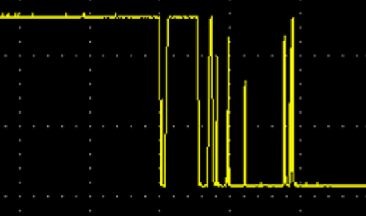

Interfaces - part 1 - continued
GPIO as an input - 1/3

- The board schematic shows an additional resistor, R141. What is its purpose?
- If the GPIO was configured as an output (bug), set to 1, and the switch was closed: short-circuit
- R141 limits the current in such a case
EDA (Electronic Design Automation) tool:
KiCad
GPIO as an input - 2/3

- The board schematic shows a capacitor, C142. What is its purpose?
EDA (Electronic Design Automation) tool:
KiCad
What really happens when closing a switch
Vertical: 1 V / division - Horizontal: 1 ms / division
Source:
circuit cellar
GPIO as an input - 3/3
- C142 "fills in" the gaps / filters out the highest frequencies
- ⇒ debouncing
- Debouncing can also be done in software
EDA (Electronic Design Automation) tool:
KiCad
Voltage and current adaptation
If peripheral voltage is different from microcontroller voltage, or if it requires more current than what the microcontroller can provide, or if regulations require some specific protections, adaptation is required:
- Optocoupler
- Relay
- Etc.
GPIO and ML application
- Start/stop a task on a contact closure:
- Start processing a video stream when a door opens
- Start converting and processing analog data when an engine starts
- Etc.
- Activate a peripheral:
- Start an alarm siren when an unknown person enters a room
- Stop a conveyor belt when a problem is detected
- Etc.
Practice session 02
Display a message when a button is pushed or released
- Follow the instructions provided by the
embedded-systems-for-ML/practice-sessions/02-GpioInput/README.mdfile.
Practice session 03
Make a LED blink
- Follow the instructions provided by the
embedded-systems-for-ML/practice-sessions/03-GpioOutput/README.mdfile.